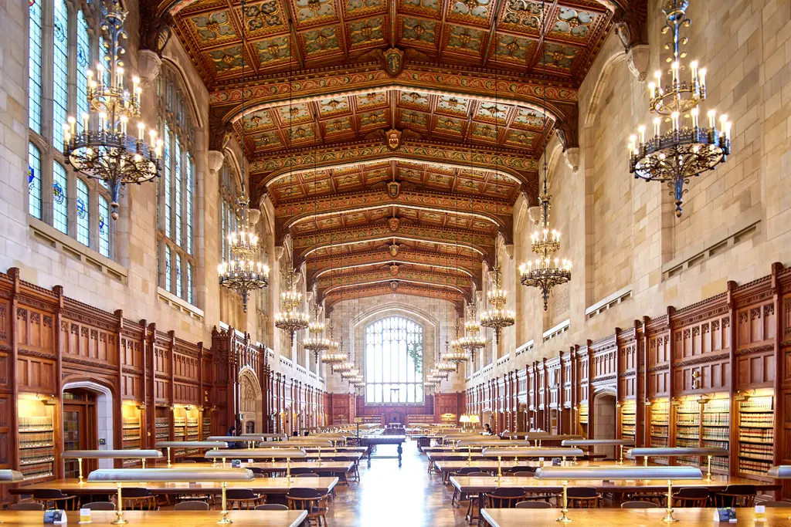

Avukat Dr. Kenan Ertunc M.A.
Rosenheim’da göç hukuku uzman avukatı. Almanya ve İtalya’da eğitim ve doktora, Warwick ve Cambridge’de araştırma, Münih’te uluslararası bir hukuk bürosunda deneyim.
Özgeçmiş
Dört ülkede eğitim, araştırma ve meslek deneyimi.
- Eğitim
Bremen, Saarbrücken ve Milano’da hukuk, çalışma bilimi ve Avrupa çalışmaları.
- Staj (Referendariat)
Saarland Yüksek Eyalet Mahkemesi, Saarbrücken.
- Doktora
Milano Üniversitesi, Graduate School for Social and Political Science.
- Araştırma
Warwick Business School Industrial Relations Research Unit, Cambridge Üniversitesi Centre for Business Research; Warwick Law School’da araştırma görevlisi.
- Uluslararası kurumlar
Cenevre’de Uluslararası Çalışma Örgütü (ILO), Brüksel’de Avrupa Sendikalar Enstitüsü (ETUI).
- Meslek
Münih’te bir danışmanlık şirketinde hukuk müşaviri ve uluslararası bir hukuk bürosunda avukat.

Yayınlar ve üyelikler
Göç hukuku uzmanlık eğitimi (Fachanwalt für Migrationsrecht). Türkçe, Almanca, İngilizce ve İtalyanca danışmanlık; Kürtçe ve Arapça için tercüman.
- Fundamental Social Rights in the European Multilevel Governance System
Transfer: European Review of Labour and Research, 2013, s. 281.
- The Legal Implications of the Social Market Economy on the European Economic Constitution
Doktora tezi, Milano Üniversitesi, 2014.
- Üyelikler
Münih Barosu (Rechtsanwaltskammer München), Alman Avukatlar Birliği (Deutscher Anwaltverein).